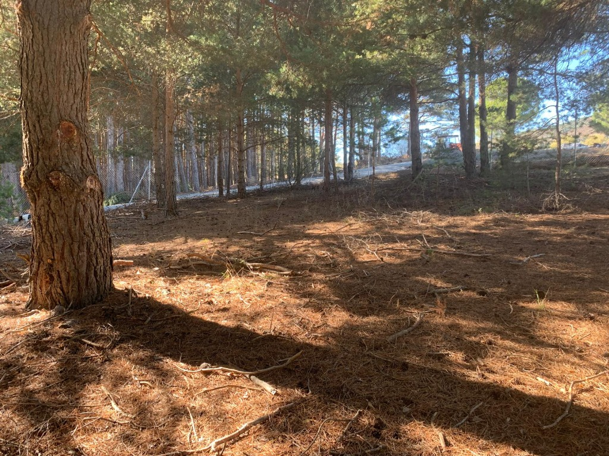

Somos una pareja, Keila Martín Betancor y Miguel Tamayo Belda, nacidos en los 80 y con recorridos de vida distintos que confluyeron en los laboratorios de la Universidad Autónoma de Madrid, donde ambos realizamos la tesis doctoral en el ámbito de la microbiología ambiental. Keila, nacida en Lanzarote se desplazó a Granada para estudiar Biología, desde hace unos años es docente autónoma en el Mercamadrid como formadora de cursos en el sector alimentario. Miguel comenzó sus estudios en la diplomatura de Educación Social, estudios que dejó a la mitad para comenzar su formación en artes circenses en la escuela de circo de Carampa, lo que, posteriormente, le conduciría a interesarse por la biología mientras estudiaba la especialidad de circo en la Escuela Internacional de Circo y Teatro CAU, en Granada, donde cursó Ciencias ambientales y Biología. En Madrid nos conocimos y ahora junto con nuestras hijos e hijas humanas y no humanas, vivimos en la Sierra Norte de Madrid. Cuando nos mudamos a la Sierra Norte de Madrid, lo hicimos con la intención de encontrar un lugar donde criar a nuestra primera hija en un entorno más amable que la ciudad. Al desplazarnos a más de 80 km de Madrid ciudad, entendimos que no podíamos continuar vinculadas a un trabajo en la ciudad, así que nos planteamos varios proyectos de carácter medioambiental. Llegado un punto, a la vista de la abundante presencia del sector terciario en el ámbito rural, nos vimos con las ganas y las fuerzas de cambiar el rumbo y hacer que todo partiese de un proyecto más vinculado a la tierra y propio del sector primario. Así surgió un proyecto enfocado en producir alimentos y distribuirlos en canales cortos, promoviendo la soberanía alimentaria. La finca donde vivimos cuenta con 24.000 m² de pinar y arbustos y además es terreno protegido ganadero por lo que nos pareció un sitio ideal para ubicar una granja de gallinas para puesta de huevos siguiendo el régimen ecológico. Tras muchas vueltas comenzamos con la parte burocrática y de permisos de todo este proyecto, que nos ha llevado casi 5 años, y mucho dinero. Por otro lado, desgraciadamente, las ayudas con las que pensábamos poder contar como la Ayuda a Nueva Incorporación para Jóvenes Agricultores ha sido imposible puesto que en la Comunidad de Madrid la cantidad de gallinas que debes poner en tu explotación es de 8.000 cabezas, número muy superior a la dimensión en la que nosotras queríamos estar (actualmente 1.600 gallinas, en un futuro como máximo 3.000). Para poder llevar a cabo este proyecto hemos necesitado un crédito que nos ha concedido Fiare Banca Ética, dos créditos familiares y una donación familiar y fondos propios. En estos 5 años hemos tenido varios momentos en los que pensábamos que no podríamos hacerlo realidad tanto por la parte burocrática como por la económica. Nos alegra haber llegado hasta aquí y poder aportar nuestro granito de arena en la alimentación responsable, saludable y local.





Granja avícola ecológica Sierra Norte de Madrid